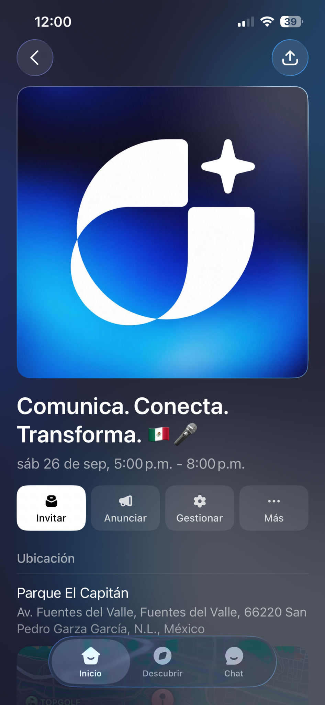
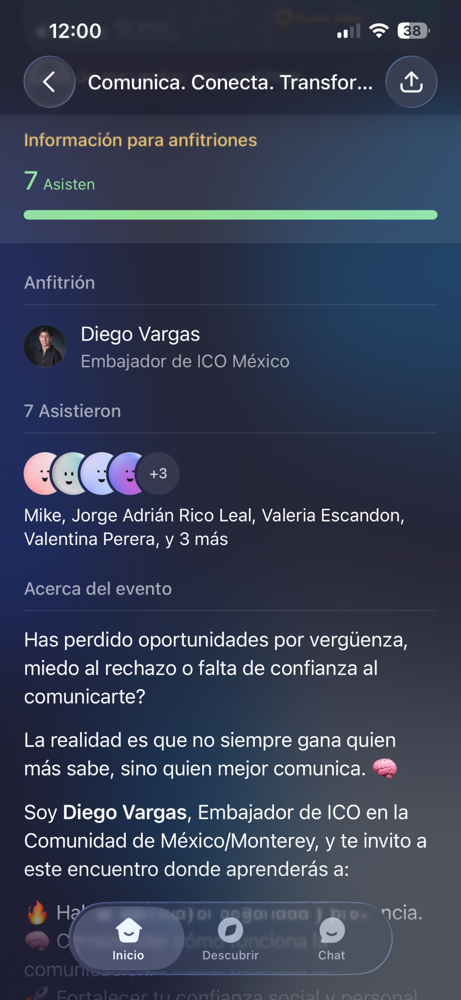
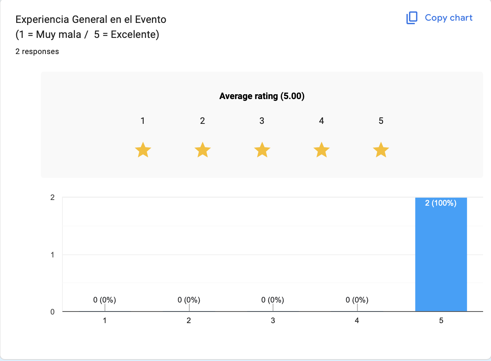
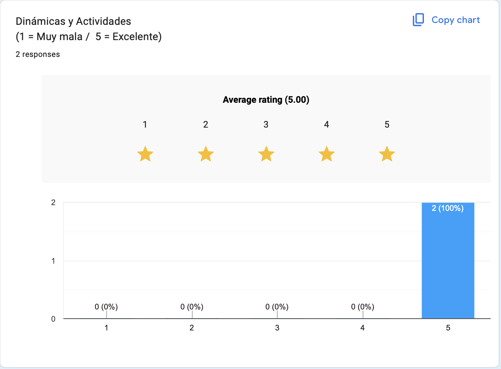
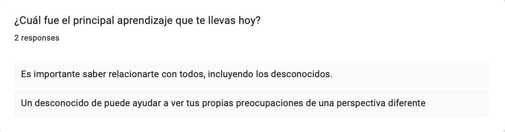
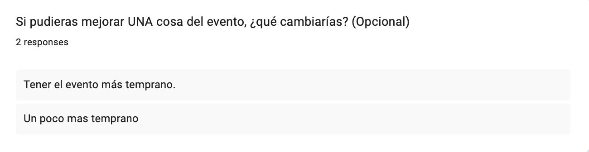
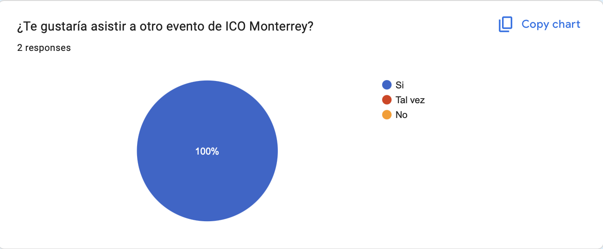

Servicio · Evidencias
Septiembre, documentado.
La evidencia está organizada por tipo: ejecución del evento, planeación y feedback. No se trata de llenar la página de archivos, sino de mostrar el proceso.



PDF · PLANEACIÓN
↗
Apoyo Visual ICO MTY · Septiembre
Objetivo, escaleta, instrucciones de dinámicas, reflexiones y checklist.
DOCX · BITÁCORA
↓
Bitácora del evento
Fecha, lugar, materiales, dinámicas y planeación operativa.
PDF · REFLEXIÓN
↗
After Action Report
Convocatoria, asistencia, ejecución, feedback, aprendizajes y plan de mejora.
“Es importante saber relacionarte con todos, incluyendo los desconocidos.”
“Un desconocido te puede ayudar a ver tus propias preocupaciones de una perspectiva diferente.”
Mejora repetida por ambos participantes
Las dos respuestas sugirieron realizar el evento más temprano. Esta observación coincide con mi propia reflexión sobre el horario y con el hecho de que la última dinámica perdió fuerza cuando oscureció.




